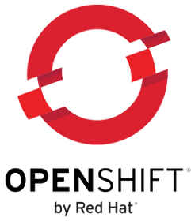
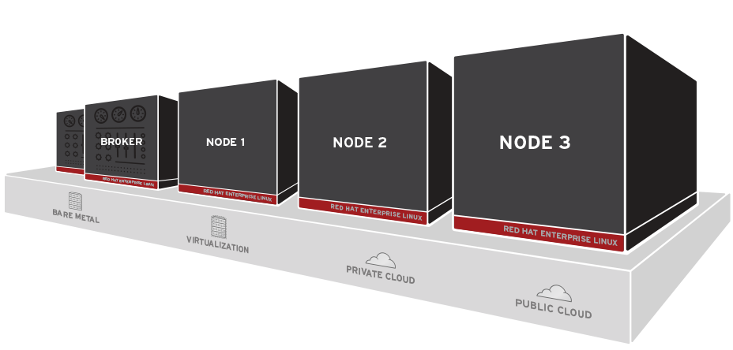
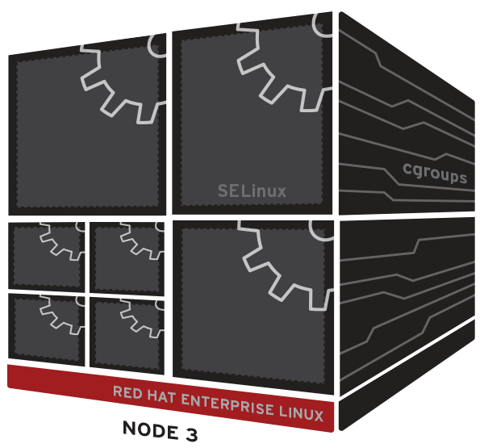
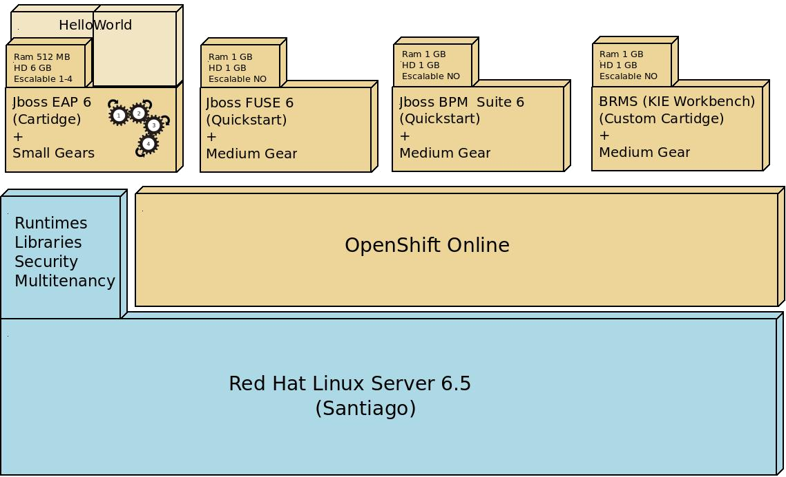
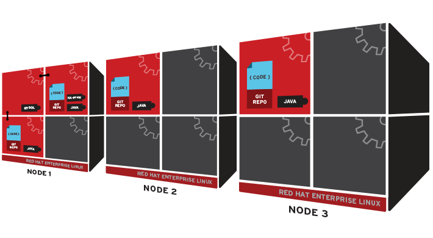

Storm
Investigación sobre PaaS (Platform as a Service), enfocada en los proveedores OpenShift online y GAE (Google App Engine).
Agenda
- Objetivos
- Google App Engine
- OpenShift
- Elasticidad en el cloud computing
Objetivos
- Instalar en distintas instancias de GAE: JBoss BRMS y JBoss Fuse.
- Instalar en distintas instancias de OpenShift online: JBoss BRMS y JBoss Fuse.
- Hacer pruebas de elasticidad sobre ambas PaaS con una aplicación básica.
OpenShift
Es una PaaS de RedHat
Sus distintas versiones son:
- Online
- Origin
- Enterprise
¿Cómo funciona?
¿Cómo funciona?
Compuesta por:
- Aplicación
- Gear
- Cartridge
- QuickStart
Plan contratado:
- Para realizar las pruebas se contrató el plan Silver.
- Está limitado a 16 gears.
- Tipos: small, medium y large.
Formas de crear una aplicación:
- Por linea de comando RHC.
- A través de la aplicación Mobile.
- Eclipse plugin.
- Aplicación web.
Flujo para el desarrollador:
- Crear aplicación.
- Configurar gear.
- Push del código.
- Build, test y deploy. Automático.
Diagrama de arquitectura Storm
¿Cómo escalan horizontalmente las aplicaciones en OpenShift?
Ventajas I
- Es orientado al desarrollo de software, automatizar procesos y evitar problemas de infraestructura.
- Posee distintos tipo de clientes; web, por línea de comando, Mobile y el plugin de eclipse.
- El cliente rhc muy completo y sencillo de usar.
- Permite hacer backups (snapshots) y restores de manera sencilla por el cliente rhc.
- Brinda facilidad para conectar servicios internos.
- Permite creación de entornos flexibles y personalizados.
- Provee varias aplicaciones pre-configuradas.
- Permite crear aplicaciones basadas en otras, copiando su contenido y configuración.
Ventajas II
- Posee completa administración de deploys; rollback, históricos, activación, desactivacion, etc.
- Da la posibilidad de crear custom cartridges.
- El acceso es simple a los logs a través del cliente rhc.
- Las aplicaciones en su mayoría son escalables automáticamente, dependiendo de la carga. Agrega gears solo si las necesita y cuando baja la carga los elimina.
- Se puede configurar de forma manual el contenedor a través de SSH.
- Se pueden crear scripts para automatizar aún más la gestión de OpenShift.
- Los gears pueden ser de diferentes tamaños.
Ventajas III
- El cliente RHC es soportado por todos los sistemas operativos.
- xPaaS
- Usa tecnologías open source, lo que permite evitar el lock-in (ser rehén de una nube en particular con sus APIs). Esto permite poder abandonar el servicio en la nube o migrarlo a otra cuando sea necesario, sin hacer ningún cambio.
Desventajas I
- Se aclara en la web que OpenShift Online esta solo disponible para Estados Unidos, Canada y Europa. Pero esto no impide abonar el plan.
- No ofrece un buen monitor para los gears. Posee uno llamado OpenShift Metrics pero sólo funciona cuando es una gear. Si ésta se configuró para escalar, ya no lo deja instalar porque no tiene soporte para múltiples gears. Por otro lado OpenShift Metrics solo ofrece dos monitoreos básicos CPU y Memoria en lapsos de tiempo muy cortos.
- Escala bien, pero no tanto como otras opciones.
Desventajas II
- Una vez que se creó una aplicación con un tamaño especifico de gear (i.e. small), queda fijo y no se puede cambiar (solo eliminando y creando la aplicación de vuelta). Si una aplicación va a escalar siempre lo va a hacer en cierta cantidad pero mismo tamaño de gears.
- A la mayoría de los cartridges xPaaS no se le aplican actualizaciones de seguridad con excepción de JBoss EAP 6.
Google App Engine

PaaS de Google con soporte para aplicaciones escritas en varios lenguajes
Ventajas
- El manejo de la elasticidad es automático.
- Mejor integración con las API's de Google.
Desventajas
- Requiere Java 7 (JDK 1.7)
- Se deben utilizar una de las opciones de base de datos que nos ofrece Google de manera
- No permite SSH
- Alta dependencia a Google
- La aplicación se desarrolla fuera de los estándares
- A las aplicaciones alojadas en App Engine resulta difícil migrarlas hacia otra plataforma
- No soporta sesiones persistentes, solo sesiones replicadas
- El almacén de datos (Datastore) no se puede compartir entre aplicaciones
Elasticidad
Para probar la elasticidad en el cloud computing se utilizó:
Casos de prueba:
- Alpha: 500 usuarios en 5 segundos
- Beta: 1500 usuarios en 5 segundos
- Gamma: 100 usuarios en 40 segundos y 80 loops
Conclusiones:
- En App Engine le resulta muy fácil escalar dejando una tasa de error en baja. Su limitante reside en que no atiende a peticiones que duren más de 30 segundos.
- OOpenShift necesita menor cantidad de instancias para resolver la misma cantidad de pedidos que su contrincante, pero posee mayor tasa de error.

¡Muchas Gracias!
I - Objetivos
Realizar una investigación, análisis y comparativa de las plataformas PaaS Google Cloud Platform y Redhat OpenShift.
Basement Level 1
Press down or up to navigate.
Basement Level 2
Cornify

Basement Level 3
That's it, time to go back up.
Slides
Not a coder? No problem. There's a fully-featured visual editor for authoring these, try it out at http://slid.es.
Point of View
Press ESC to enter the slide overview.
Hold down alt and click on any element to zoom in on it using zoom.js. Alt + click anywhere to zoom back out.
Works in Mobile Safari
Try it out! You can swipe through the slides and pinch your way to the overview.
Marvelous Unordered List
- No order here
- Or here
- Or here
- Or here
Fantastic Ordered List
- One is smaller than...
- Two is smaller than...
- Three!
Transition Styles
You can select from different transitions, like:
Cube -
Page -
Concave -
Zoom -
Linear -
Fade -
None -
Default
Themes
Reveal.js comes with a few themes built in:
Default -
Sky -
Beige -
Simple -
Serif -
Night
Moon -
Solarized
* Theme demos are loaded after the presentation which leads to flicker. In production you should load your theme in the <head> using a <link>.
Global State
Set data-state="something" on a slide and "something"
will be added as a class to the document element when the slide is open. This lets you
apply broader style changes, like switching the background.
Custom Events
Additionally custom events can be triggered on a per slide basis by binding to the data-state name.
Reveal.addEventListener( 'customevent', function() {
console.log( '"customevent" has fired' );
} );
Slide Backgrounds
Set data-background="#007777" on a slide to change the full page background to the given color. All CSS color formats are supported.
Image Backgrounds
<section data-background="image.png">Repeated Image Backgrounds
<section data-background="image.png" data-background-repeat="repeat" data-background-size="100px">Background Transitions
Pass reveal.js the backgroundTransition: 'slide' config argument to make backgrounds slide rather than fade.
Background Transition Override
You can override background transitions per slide by using data-background-transition="slide".
Clever Quotes
These guys come in two forms, inline:
“The nice thing about standards is that there are so many to choose from”
and block:
“For years there has been a theory that millions of monkeys typing at random on millions of typewriters would reproduce the entire works of Shakespeare. The Internet has proven this theory to be untrue.”
Pretty Code
function linkify( selector ) {
if( supports3DTransforms ) {
var nodes = document.querySelectorAll( selector );
for( var i = 0, len = nodes.length; i < len; i++ ) {
var node = nodes[i];
if( !node.className ) {
node.className += ' roll';
}
}
}
}
Courtesy of highlight.js.
Intergalactic Interconnections
You can link between slides internally, like this.
Fragmented Views
Hit the next arrow...
... to step through ...
any type- of view
- fragments
Fragment Styles
There's a few styles of fragments, like:
grow
shrink
roll-in
fade-out
highlight-red
highlight-green
highlight-blue
current-visible
highlight-current-blue
Spectacular image!

Export to PDF
Presentations can be exported to PDF, below is an example that's been uploaded to SlideShare.
Take a Moment
Press b or period on your keyboard to enter the 'paused' mode. This mode is helpful when you want to take distracting slides off the screen during a presentation.